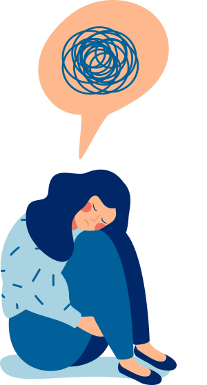

.jpg)
Los trastornos mentales son diagnosticados de manera habitual en nuestros días, y todo el mundo conoce en menor o mayor medida lo que significa depresión, trastorno de ansiedad, bulimia, etcétera. Sin embargo, algunos son más frecuentes que otros, lo cual hace que aquellos que están más extendidos merezcan un grado extra de atención.
Trastornos de Ansiedad: Preocupación excesiva y miedos irracionales (ej. fobias, trastorno de pánico).
Depresión: Sentimientos persistentes de tristeza y pérdida de interés.
Trastornos del Estado de Ánimo: Cambios extremos en el estado de ánimo, como en el trastorno bipolar.
Trastornos de la Alimentación: Afectan la relación con la comida y la imagen corporal (ej. anorexia, bulimia).
Esquizofrenia: Afecta la percepción de la realidad, causando alucinaciones y delirios.

Los trastornos mentales pueden ser causados por una combinación de factores biológicos, genéticos, psicológicos y ambientales. El estrés, traumas y antecedentes familiares son factores que pueden aumentar el riesgo.
En el ámbito psicológico, experiencias de trauma o abuso, especialmente en la infancia, pueden influir en el desarrollo de trastornos. Por otro lado, factores ambientales como el estrés crónico, la pobreza, el aislamiento social y la falta de apoyo emocional pueden aumentar significativamente el riesgo de desarrollar problemas de salud mental.
Es fundamental buscar ayuda profesional si tú o alguien que conoces está luchando con problemas de salud mental. La terapia, la medicación y el apoyo son esenciales para la recuperación y el manejo de estos trastornos.
Las personas que enfrentan trastornos mentales pueden beneficiarse de diversos recursos, como líneas de ayuda disponibles las 24 horas, terapia profesional (psicólogos y psiquiatras), y grupos de apoyo que fomentan la conexión con otros. También existen organizaciones sin fines de lucro que ofrecen información y programas educativos. Además, las aplicaciones de bienestar y el apoyo de familiares y amigos son esenciales para el proceso de recuperación.

La salud mental es una parte crucial de nuestro bienestar general. Al aumentar la conciencia y el entendimiento sobre los trastornos mentales, podemos ayudar a reducir el estigma y fomentar un entorno de apoyo y comprensión.
INSTITUCIÓN EDUCATIVA TÉCNICO INDUSTRIAL PEDRO CASTRO MONSALVO
Proyecto De Grado: Ana Diaz, Lineth Gutierrez, Jeffer Forrero.
Taller de Informática
© 2024